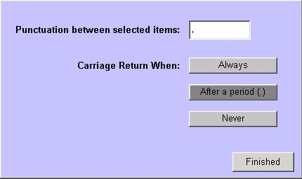

|
Steps
Follow the steps below:
- In most workplans, after the Vitals have been documented, the Chief Complaint screen appears. If the screen does not automatically appear, you can access it from a link on the Vitals screen or by selecting the blue Chief Complaint text on the Patient Chart.
- To add symptoms, either type the information in the white text area or select them from the pick list on the left. As you select symptoms, they appear in the white Chief Complaint box on the right of the screen.
- To assign a duration or onset to the symptom, select the number, the unit of measure (minutes, hours, days, etc.) then select either the Onset or Duration button.
The information appears in the Chief Complaint box. The information appears in the text box in the format, "vomiting beginning 3 days ago" (onset) or "vomiting lasting for 3 days" (duration).
- To document a frequency of the symptom, select the number, the unit of measure (minutes, hours, days, etc.) then select the T/P (times per) button. The information appears in the text box in the format, "vomiting 3 times per day"
- To document any pertinent negatives or absent symptoms, select No, next to a symptom on the left.
- If the symptom you want to document does not appear on the list, type in the information.
- Repeat steps 2 - 6 until you have documented all the patient"s symptoms.
- When finished documenting the chief complaint, select the OK button.
Punctuation on a Freeform History Screen
The Chief Complaint screen is an example of a Freeform History screen in encounterPRO. These screens are characterized by a pick list of items, a free text area, and a Punctuation button in the lower right. When the user selects the Punctuation button, the following screen appears.

The user can select what punctuation mark will automatically be inserted between items selected from the picklist, and when a carriage return is automatically inserted.
Want to Learn More?
Related Solutions
Screen: Chief Complaint
How to: Edit a Pick List.
How to: Edit the Chief Complaint Pick List.
Related Education Opportunities
Clinical Staff
|